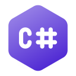

Dovednosti
|  | ||
C#C# se učím z tutoriálů na itnetwork.cz, dokáži tvořit jednoduché konzolové i okenní aplikace a programovat objektově. |
ReactReact studuji z tutoriálů na itnetwork.cz. Umím vytvářet jednoduché webové aplikace a chápu principy komponentového přístupu. |
JavaScriptJavaScript je mým oblíbeným jazykem pro tvorbu interaktivních webových aplikací. Učím se jej z moderních online zdrojů, jako je ITnetwork. |